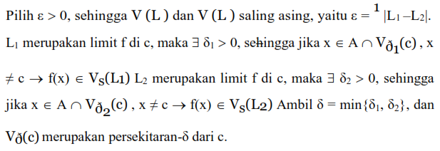
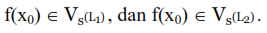
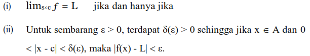
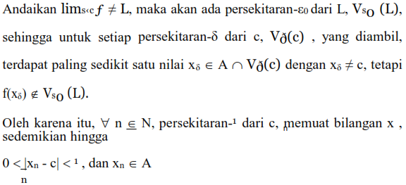

Pada bagian ini kita akan mempelajari konsep limit fungsi. Sebelum melangkah lebih jauh, untuk menyegarkan ingatan, perhatikan kembali fungsi f(x) = x2-1⁄x-1 yang tidak terdefinisi di x = 1. Namun demikian kita dapat melihat bahwa jika x cukup dekat ke 1 tapi x ≠ 1 maka f(x) cukup dekat ke 2. Ini adalah contoh sederhana untuk mengingat gagasan limit fungsi.
Sesungguhnya yang dimaksud dengan “fungsi f mempunyai limit L di c adalah nilai f mendekati L, untuk x mendekati c”. Dengan demikian, dapat diartikan bahwa f(x) terletak pada sembarang persekitaran-ε, hanya berlaku jika x terletak pada persekitaran-δ dari c, dan x ≠ c. Pemilihan nilai δ bergantung pada pemilihan nilai ε sehingga kadang-kadang ditulis δ = δ(ε). Yang perlu diperhatikan adalah f tidak harus terdefinisi di c, tetapi harus terdefinisi pada titik- titik di sekitar c (terletak pada persekitaran-δ dari c).
Definisi:
A ⊆ R. Titik c ∈ R adalah titik limit dari A, jika untuk setiap persekitaran-δ dari c, Vð(c) = (c-δ, c + δ), memuat paling sedikit satu titik dalam A yang berbeda dengan c. Dengan kata lain: A ⊆ R, c titik limit dari A jika Vð(c) ∩ A – {c} ≠ ∅.
Perhatikan, pada definisi di atas tidak disyaratkan bahwa c ada di A, namun di lingkungan sekecil apapun sekitar c selalu ada elemen x ∈ A yang berbeda dari c.
Teorema
Bilangan real c adalah titik limit dari A, A ⊆ R, jika dan hanya jika ada barisan (an) dalam A dan an ≠ c, ∀ n ∈ N sedemikian hingga lim (an) = c.
Bukti:
(→) A ⊆ R. Bilangan real c adalah titik limit dari A maka akan ditunjukkan ada barisan (an) dalam A dan an ≠ c, ∀ n ∈ N sedemikian hingga lim (an) = c.
c adalah titik limit dari A, artinya untuk sembarang n ∈ N, persekitaran -1⁄n dari c, yaitu V1⁄n (c) memuat paling sedikit satu titik dalam A yang berbeda dengan c. Jika an, ∀ n ∈ N merupakan titik-titik tersebut, maka an ∈ A, an ≠ c dan lim (an) = c. (terbukti).
(←) jika ada barisan (an) dalam A dan an ≠ c, ∀ n ∈ N sedemikian hingga lim (an) = c akan ditunjukkan bahwa c adalah titik limit dari A (an) dalam A dan an ≠ c maka (an) dalam A – {c}, dan lim (an) = c, artinya untuk sembarang δ > 0, ∃ K(δ) ∈ N sehingga jika n ≥ K(δ), maka an ∈ Vð(c).
Dengan kata lain, terdapat persekitaran-δ dari c, Vð(c), yang memuat titik-titik an,∀ n ≥ K(δ), an ∈ A dan an ≠ c. Jadi, c merupakan titik limit dari A.
Definisi Limit
A ⊆ R, f: A → R, dan c merupakan titik limit dari A Bilangan real L merupakan limit dari f di c, jika untuk sembarang persekitaran-ε dari L, Vs(L), ada persekitaran-δ dari c, Vð(c), sedemikian hingga untuk sembarang x ∈ Vð(c) ⋂ A, x ≠ c, maka f(x) ∈ V s(L).
Catatan:
C. Teorema
Jika f: A → R, dan c titik limit dari A, maka f hanya mempunyai satu limit di c.
Bukti:
Andaikan f mempunyai dua nilai limit di c, yaitu L1 dan L2, L1 ≠ L2.
Karena c merupakan titik limit dari A, maka paling sedikit terdapat satu titik dalam A, yaitu x0 ≠ c dan x0 ∈ A ∩ Vð(c). Sebagai akibatnya, 
D. Teorema (Kriteria ε – δ untuk Limit)
f: A → R, titik limit dari A, maka:

Bukti:
(i) → (ii) Jika f mempunyai limit L di c. Maka untuk sembarang ε > 0 terdapat δ(ε) > 0 sehingga untuk setiap x ∈ A dan x ∈ Vð(c) x ≠ c, maka f(x) ∈ Vs(L).
(iii) → (i) Untuk sembarang ε > 0, terdapat
δ(ε) > 0 sehingga jika x ∈ A dan 0 < |x - c| < δ(ε), maka |f(x) - L| < ε.
Teorema (Kriteria Barisan)
f: A → R, dan c merupakan titik limit dari A; maka :
Bukti:
(i) → (ii). Anggap f mempunyai limit L di c, serta (xn) merupakan barisan dalam A dengan lim(xn) = c dan xn ≠ c, ∀ n ∈ N. Kita harus menunjukkan bahwa barisan (f(xn)) konvergen ke L.
(i) → (i). Pembuktian akan menggunakan kontra positif, yaitu dengan mengandaikan (i) tidak benar akan diperoleh juga bahwa (ii) tidak benar.

Tetapi, |f(xn)L| ≥ ε0, ∀ n ∈ N.
Dengan demikian dapat disimpulkan, terdapat barisan (xn) termuat dalam A – {c} yang konvergen ke c, tetapi barisan (f(xn)) tidak konvergen ke L. Jadi, dengan mengambil (i) tidak benar diperoleh (ii) tidak benar, sesuai sifat kontra positif, maka (ii) → (i) bernilai benar!
Dari beberapa teorema di atas maka tampak bahwa beberapa sifat dasar limit fungsi dapat dibuktikan dengan menggunakan sifat-sifat kekonvergensian barisan.
Contoh : Jika (xn) merupakan sembarang barisan yang konvergen ke suatu bilangan c, maka (xn2 ) konvergen ke c2 . Oleh karena itu, dengan menggunakan Kriteria Barisan, fungsi h(x):= x2 mempunyai limit : lims‹c h(x) = c2
F. Kriteria Divergensi
Berikut akan ditunjukkan (i) suatu bilangan tertentu bukan merupakan limit dari suatu fungsi pada suatu titik, atau (ii) suatu fungsi tidak mempunyai limit pada suatu titik.
A ⊆ R, f: A → R, dan c merupakan titik
limit dari A.
Kesimpulan
Dalam bahasa Matematika, limit menjelaskan nilai suatu fungsi jika didekati dari titik tertentu. Mengapa harus didekati dari titik tertentu dan bukan tepat di titik tertentu? Hal ini disebabkan tidak semua fungsi terdefinisi pada semua titik. Faktor terpenting adalah memahami konsep dan definisi dari limit fungsi itu sendiri dan juga sifat-sifatnya.